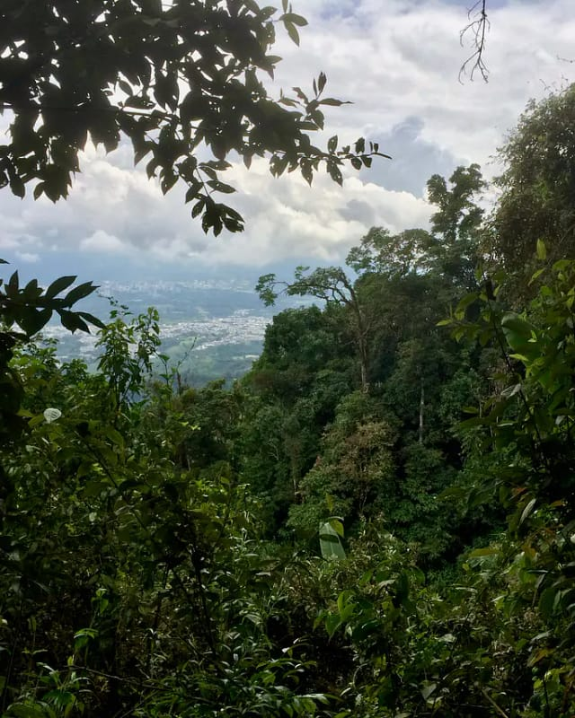
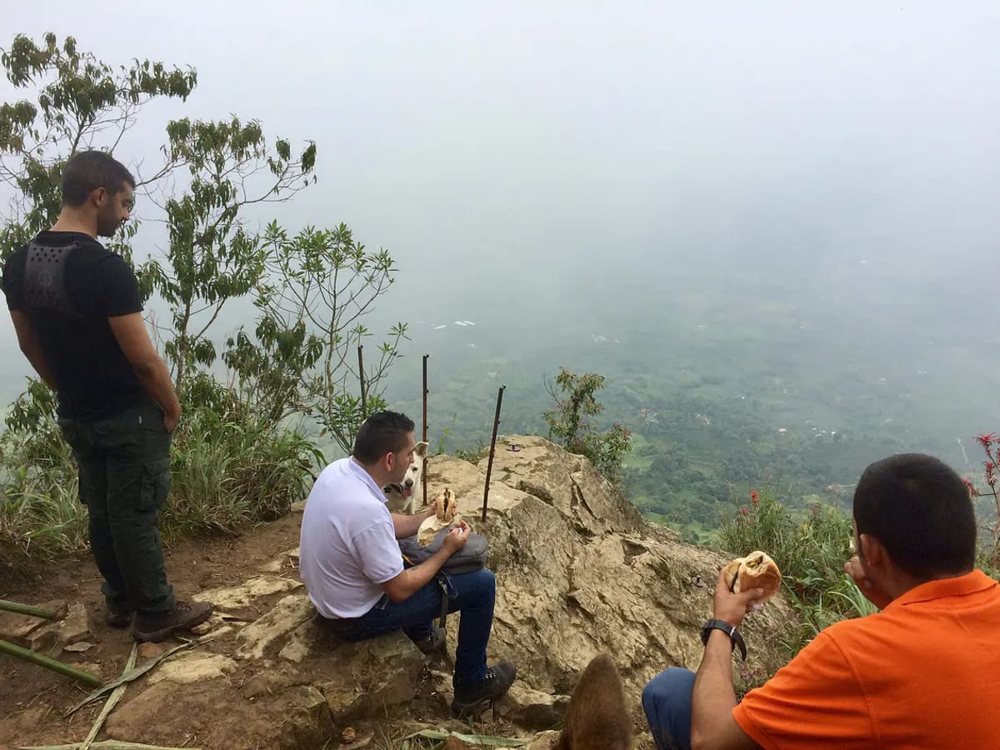

✈️ Aeroporto de Pereira
~1h 40min de carro
Porta de entrada mais fácil para a Região Cafeteira. Voos diários de Bogotá, Medellín, Cáli e Miami.
Entrada internacionalEcoparque Peñas Blancas é uma reserva natural em Calarcá, no coração da Região Cafeteira colombiana, onde a rocha, a floresta de neblina e a lenda do Cacique Calarcá se encontram. Escalada, rapel, espeleologia, trilhas e camping a 2.430 m de altitude.
 Andes Centrais
Andes Centrais
Calarcá tem acesso fácil. Se você já está indo para Salento, Vale do Cocora ou Pereira, encaixar um dia em Peñas Blancas é a melhor decisão.
Porta de entrada mais fácil para a Região Cafeteira. Voos diários de Bogotá, Medellín, Cáli e Miami.
Entrada internacionalSe você está em Salento, meio dia em Peñas Blancas se encaixa perfeitamente no seu roteiro cafeteiro.
Bate-volta idealCapital do Quindío. Pegue um Jeep Willys na Praça do Mercado de Calarcá até La Virginia.
Mais próximoBrasileiros adoram a Região Cafeteira. Inclua Peñas Blancas no seu mochilão pela Colômbia.
MochilãoUma visão de drone sobre a trilha, o paredão e os 360° do Quindío.

📹 Vídeo do canal Mosquera Music · Ver no YouTube

Floresta
De neblina
Rocha
Paredões 280 m
Cume
2.430 m s.n.m.No corregimento de La Virginia, acima de Calarcá, os paredões brancos se erguem como uma sacada natural sobre o Quindío. O Ecoparque protege essa montanha ancestral — lar da lenda do Cacique Calarcá e das culturas Quimbaya e Pijao.
Aqui, aventura caminha junto com conservação: cada visita apoia uma floresta onde já plantamos mais de 20.000 árvores.
De uma caminhada tranquila pela floresta até um dia completo de escalada e rapel em paredões de 80 metros.
Paredões naturais de até 280 metros, totalmente verticais. Vias para iniciantes e avançados, com instrutor e equipamento certificado.
Aventura · UIAADesça paredões de até 80 metros sob normas internacionais. Experiência segura, sem necessidade de experiência prévia.
Aventura · UIAAExplore cavernas profundas seguindo os passos da lenda do Cacique Calarcá. Uma expedição ao coração úmido e silencioso da montanha.
Aventura · CulturaTrilha de 3,2 km em floresta nativa, mirantes e áreas de reflorestamento. Ideal para famílias e observadores de aves.
NaturezaA floresta de neblina do Quindío abriga dezenas de espécies. Traga seu binóculo — tucanos, beija-flores e rapinantes esperam.
Natureza · BirdingMini tirolesa de 40 metros sobre a floresta. Perfeita para crianças e para quem quer um gostinho de adrenalina sem muita altura.
FamíliaFutebol society, vôlei, brinquedos infantis e pistas para esportes de observação. Espaços ao ar livre para grupos.
Grupos · FamíliaOficinas e visitas guiadas para escolas e grupos: reflorestamento, fauna do Quindío e cultura Quimbaya/Pijao.
Escolas · GruposA entrada na trilha é muito acessível. Atividades de aventura e hospedagem são cotadas por grupo — chame no WhatsApp e montamos seu plano ideal.
Trilha ecológica
Escalada · Rapel · Espeleologia
Pernoite na montanha
💬 Para preços atualizados, escreva no WhatsApp ou ligue: +57 310 396 7951 · +57 300 658 7163.
A montanha de noite é outra coisa. Acorde com o canto dos pássaros e o cheiro da floresta úmida.

Um chalé espaçoso e aconchegante, ideal para grupos, famílias ou um retiro tranquilo. Acomoda até 10 pessoas.

Espaço amplo com plataformas, drenagem, cozinha compartilhada e banheiros. Privacidade e silêncio em plena natureza.

Culinária tradicional do Quindío com ingredientes frescos da região. Almoços típicos, suco de cana e café local.
"Antes da chegada dos conquistadores espanhóis, o Cacique Calarcá escondeu o ouro do seu povo nas cavernas e paredões brancos da montanha. Quem caminha por estas rochas hoje caminha pela história dos povos Pijao e Quimbaya."
— Tradição oral do Quindío
Um pequeno vislumbre da paisagem que te espera. Para fotos reais do parque, siga no @ecoparquepenasblancas.
O parque recebe visitantes de quarta a segunda durante o dia. Recomendamos chegar cedo para aproveitar a melhor luz da floresta.
Para escalada, rapel e espeleologia é indispensável reservar com antecedência para coordenar guia e equipamentos.
💡 A melhor janela para fotos nos paredões e caminhadas tranquilas é entre 9h e 11h30.
Corregimento de La Virginia, a 30–40 min do centro de Calarcá. No coração da Região Cafeteira colombiana, perto de Armenia, Salento e Filandia.
Calarcá, Quindío · Colombia. 2.430 m acima do mar, nos Andes Centrais, na Paisagem Cultural Cafeteira.
Abrir no Google MapsDistâncias aproximadas
Tudo o que você precisa saber antes de subir até o ecoparque.
A entrada na trilha custa a partir de COP $7.000 por pessoa e inclui uma bebida. Atividades de aventura e hospedagem são cotadas separadamente no WhatsApp.
No corregimento de La Virginia, município de Calarcá, departamento de Quindío. A cerca de 30–40 min do centro de Calarcá por estrada de montanha.
Pegue um Jeep Willys na Praça do Mercado de Calarcá até o ecoparque. Corrida expressa custa aprox. COP $30.000.
Não. Trabalhamos com instrutores e todos os equipamentos seguem a norma internacional UIAA. Recebemos iniciantes, famílias e grupos.
Sapato fechado com boa aderência, calça comprida, hidratação, repelente, protetor solar e blusa de frio. Temperaturas: 12–20 °C.
Sim. Crianças devem vir acompanhadas de um adulto responsável. Pets são bem-vindos com guia/coleira e carteira de vacinação em dia.
Sim — restaurante com culinária do Quindío (sob reserva), chalé para até 10 pessoas e área de camping com cozinha compartilhada, banheiros e chuveiros.
Para visitas guiadas e atividades de aventura o horário é de quarta a segunda, 9h às 15h. Sempre recomendamos confirmar no WhatsApp antes de subir.
O ecoparque é uma reserva: proibido fumar, álcool, substâncias e armas. Leve todo o lixo de volta. Estamos plantando floresta há anos — ajude a protegê-la.
A tradição Quimbaya e Pijao conta que o Cacique Calarcá escondeu o tesouro do seu povo nas cavernas e paredões brancos da montanha antes da chegada dos conquistadores espanhóis. Caminhar pelas cavernas hoje é entrar nessa história ancestral.
Escreva no WhatsApp para reservar uma visita, agendar atividades de aventura, hospedagem ou um plano sob medida para seu grupo.


Subindo a montanha em 4 passos
O parque fica em La Virginia, a 30–40 min de Calarcá. É estrada de montanha — vá com calma, você chega.
Chegue a Calarcá
Calarcá está a 10 min de Armenia. De ônibus, desça no terminal de Calarcá e siga até a Praça do Mercado.
Pegue um Jeep Willys
Na Praça do Mercado pegue um Jeep Willys até o ecoparque. Corrida expressa até o estacionamento custa aprox. COP $30.000.
Combine a visita
Antes de subir, escreva no WhatsApp para confirmar guia, equipamento ou hospedagem. Sinal de celular é limitado na montanha.
Leve o necessário
Sapato fechado, calça comprida, hidratação, repelente, protetor solar e blusa de frio. Temperaturas de 12 °C a 20 °C.